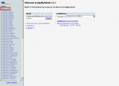
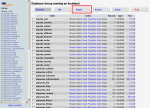
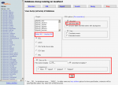

Upon opening phpMyAdmin, there is a startpage on the screen. Click on the databasename to get to the second step. The databasename is marked red in the pictures.
Database Backup
how to backup correctly
To backup a database you can use the mostly supported tool phpMyAdmin.Please ask your provider for the path to this program.
The following screenshots may differ, depending on the version of phpMyAdmin. The way to use the program stays the same.
|  | |
| click to enlarge |
|  | |
| click to enlarge |
To get to the databasebackupsetting click please export.
|  | |
| click to enlarge |
To create a complete backup of your database follow these steps.
On the right side locate the field Export Choose Select All or you choose only the phpwcms tables. The easiest way to do that is to first click on phpwcms while holding down the shift key on the keyboard. While pushing down the shift key, drag the arrow over the entire table until the entire table is highlighted, making sure that all phpwcms are marked.
Then choose the SQL options on the right.
Add DROP TABLE, this will overwrite all phpwcms tables
There should be a hook at data.
Then choose compression gzip.
Now click on OK and a *zip-file will be created which will include the database backup.
back to:
On the right side locate the field Export Choose Select All or you choose only the phpwcms tables. The easiest way to do that is to first click on phpwcms while holding down the shift key on the keyboard. While pushing down the shift key, drag the arrow over the entire table until the entire table is highlighted, making sure that all phpwcms are marked.
Then choose the SQL options on the right.
Add DROP TABLE, this will overwrite all phpwcms tables
There should be a hook at data.
Then choose compression gzip.
Now click on OK and a *zip-file will be created which will include the database backup.
Article created: Saturday, 23. October 2004
Last Changes: Tuesday, 4. January 2011
Last Changes: Tuesday, 4. January 2011